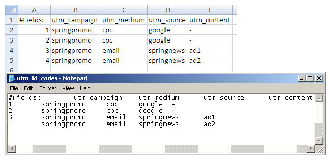

Utilisation des codes de suivi principaux
Urchin vous permet de marquer vos liens à l'aide de codes de suivi principaux (utm_id) plutôt qu'avec des variables individuelles. Il vous suffit d'utiliser utm_id dans vos liens et de définir la signification de chaque utm_id dans un tableau. Par exemple, au lieu de :
http://www.sitehôte.fr/?utm_source=overture&utm_medium=cpc&utm_campaign=springpromo
vous pouvez utiliser la variable UTM utm_id comme suit :
http://www.sitehôte.fr/?utm_id=2
L'utilisation de utm_id masque vos variables de suivi de campagne aux yeux des internautes et rend votre processus de balisage moins sujet aux erreurs puisque les valeurs des variables de suivi de campagne sont spécifiées dans un tableau, ce qui facilite les corrections et les modifications.
Pour utiliser les codes de suivi principaux, vous devez
- définir vos codes dans un tableau ;
- appliquer ce tableau en tant que filtre de votre profil ;
- utiliser les codes de suivi principaux dans vos liens.
Définition de vos codes
Pour définir vos codes :
- Créez un tableau sous Excel qui associe vos codes à un ensemble de variables de campagne.
- La première ligne du fichier doit commencer par "#Fields:", suivi des noms de variables UTM dans l'ordre de votre choix. Chaque ligne définit les paramètres de variable de campagne du code de suivi principal que vous placez dans la colonne #Fields. Insérez un tiret (-) pour n'indiquer aucune valeur. Vous pouvez omettre tous les champs du tableau pour lesquels les codes ne sont associés à aucune valeur. Ajoutez une ligne vierge à la fin du fichier. (La dernière ligne du fichier ne doit contenir aucun texte.)
- Enregistrez le tableau Excel sous forme de fichier de texte brut délimité par des tabulations dans le répertoire lib/custom/lookuptables de la distribution Urchin. Son extension doit être ".lt".

Application du tableau à votre profil
Pour appliquer le tableau à un profil :
- Connectez-vous au système Urchin en tant qu'administrateur, puis cliquez sur Configuration (en haut à droite de l'interface).
- Modifiez le profil auquel vous souhaitez appliquer les codes de suivi principaux.
- Dans l'onglet Filtres, cliquez sur l'icône Ajouter.
- Dans l'assistant filtres, sous Type de filtre, sélectionnez Tableau de conversion.
- Le champ Nom du tableau apparaît dans l'assistant.
- Dans la liste déroulante Nom du tableau, sélectionnez le nom du tableau que vous avez créé. Si votre tableau n'apparaît pas dans la liste déroulante, vérifiez que son nom se termine bien par .lt et qu'il a été enregistré dans le répertoire lib/custom/lookuptables de votre distribution Urchin.
- Dans la liste déroulante Champ de filtrage, sélectionnez utm_id (AUTO).
- Cliquez sur Terminer.
Utilisation de vos codes dans vos liens
Utilisez les valeurs de la colonne Fields (Champs) de votre tableau de conversion comme valeurs utm_id. Par exemple, à l'aide du tableau de conversion créé plus haut dans cet article, vous pouvez paramétrer un lien comme suit :
http://www.sitehôte.fr/?utm_id=1
Remarques supplémentaires
Si vous utilisez utm_id conjointement avec d'autres variables UTM dans un lien (telles que utm_source), les valeurs de ces autres variables seront écrasées par celles que vous avez définies dans votre tableau de conversion.